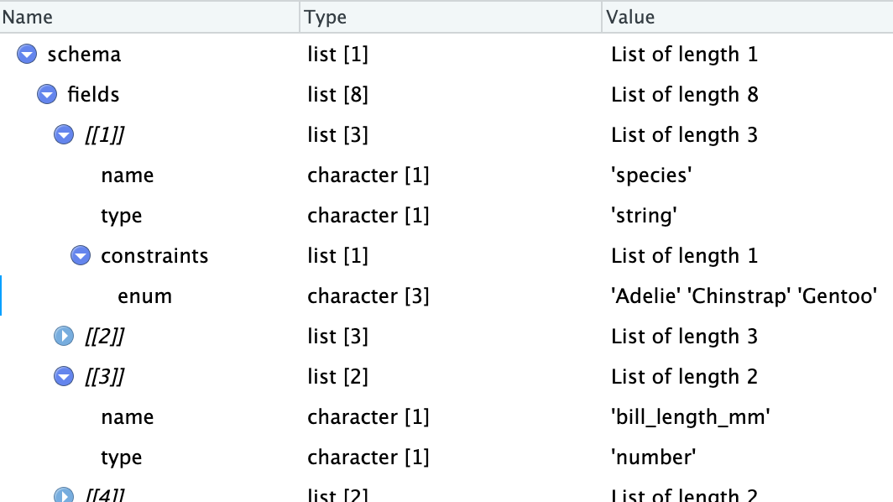

2024-04-02
Problem: Someone gives you a dataset, but you need to be sure that
Frictionless data solves these problems by distributing a metadata file with the data.
[1] "reference-data" "gps" "acceleration" # A tibble: 13 × 27
`tag-id` `animal-id` `animal-taxon` `deploy-on-date` `deploy-off-date`
<chr> <chr> <chr> <dttm> <dttm>
1 5742 L918401 Haematopus ostr… 2018-05-24 16:27:00 2018-08-24 00:00:00
2 5622 L918403 Haematopus ostr… 2018-05-25 16:08:00 NA
3 5670 L918402 Haematopus ostr… 2018-05-25 16:16:00 NA
4 5743 L918405 Haematopus ostr… 2018-05-28 16:00:00 NA
5 5658 L918404 Haematopus ostr… 2018-05-28 16:31:00 NA
6 5741 L918406 Haematopus ostr… 2018-05-30 16:04:00 NA
7 5744 L918407 Haematopus ostr… 2018-05-30 16:25:00 NA
8 5651 L922103 Haematopus ostr… 2018-05-31 15:58:00 NA
9 5645 L922102 Haematopus ostr… 2018-05-31 16:33:00 NA
10 5672 L922107 Haematopus ostr… 2018-06-11 16:29:00 2018-09-27 00:00:00
11 5624 L922112 Haematopus ostr… 2018-06-15 16:11:00 NA
12 5653 L918408 Haematopus ostr… 2018-06-22 16:35:00 NA
13 5745 L178426 Haematopus ostr… 2019-06-20 15:45:00 NA
# ℹ 22 more variables: `alt-project-id` <chr>, `animal-comments` <chr>,
# `animal-life-stage` <chr>, `animal-mass` <dbl>, `animal-nickname` <chr>,
# `animal-ring-id` <chr>, `animal-sex` <chr>, `attachment-type` <chr>,
# `deploy-on-latitude` <dbl>, `deploy-on-longitude` <dbl>,
# `deploy-on-measurements` <chr>, `deployment-comments` <chr>,
# `deployment-end-type` <chr>, `deployment-id` <chr>,
# `location-accuracy-comments` <chr>, `manipulation-type` <chr>, …Create a folder (penguin-data-table) with data and metadata:
More functions in the Python version.
Read the data with the following functions:
[1] "penguins"Still a work-in-progress, but tools are being developed.
{"fields":[{"name":["species"],"type":["string"],"constraints":{"enum":["Adelie","Chinstrap","Gentoo"]}},{"name":["island"],"type":["string"],"constraints":{"enum":["Biscoe","Dream","Torgersen"]}},{"name":["bill_length_mm"],"type":["number"]},{"name":["bill_depth_mm"],"type":["number"]},{"name":["flipper_length_mm"],"type":["integer"]},{"name":["body_mass_g"],"type":["integer"]},{"name":["sex"],"type":["string"],"constraints":{"enum":["female","male"]}},{"name":["year"],"type":["integer"]}]} 
JSON schema for penguins data
name path profile format mediatype encoding
1 penguins penguins.csv tabular-data-resource csv text/csv utf-8
title
1 Data about penguins
fields
1 species, island, bill_length_mm, bill_depth_mm, flipper_length_mm, body_mass_g, sex, year, string, string, number, number, integer, integer, string, integer, Adelie, Chinstrap, Gentoo, Biscoe, Dream, Torgersen, female, male[[1]]
name type enum
1 species string Adelie, Chinstrap, Gentoo
2 island string Biscoe, Dream, Torgersen
3 bill_length_mm number NULL
4 bill_depth_mm number NULL
5 flipper_length_mm integer NULL
6 body_mass_g integer NULL
7 sex string female, male
8 year integer NULL# Source: SQL [?? x 2]
# Database: sqlite 3.51.1 [/var/folders/nm/s3fqdtfj4_vd34n3855h_6j80000gn/T//Rtmp3McMar/nycflights13.sqlite]
carrier name
<chr> <chr>
1 9E Endeavor Air Inc.
2 AA American Airlines Inc.
3 AS Alaska Airlines Inc.
4 B6 JetBlue Airways
5 DL Delta Air Lines Inc.
6 EV ExpressJet Airlines Inc.# Source: SQL [?? x 1]
# Database: sqlite 3.51.1 [/var/folders/nm/s3fqdtfj4_vd34n3855h_6j80000gn/T//Rtmp3McMar/nycflights13.sqlite]
n
<int>
1 336776# Source: SQL [?? x 19]
# Database: sqlite 3.51.1 [/var/folders/nm/s3fqdtfj4_vd34n3855h_6j80000gn/T//Rtmp3McMar/nycflights13.sqlite]
year month day dep_time sched_dep_time dep_delay arr_time sched_arr_time
<int> <int> <int> <int> <int> <dbl> <int> <int>
1 2013 1 1 517 515 2 830 819
2 2013 1 1 533 529 4 850 830
3 2013 1 1 542 540 2 923 850
4 2013 1 1 544 545 -1 1004 1022
5 2013 1 1 554 600 -6 812 837
6 2013 1 1 554 558 -4 740 728
# ℹ 11 more variables: arr_delay <dbl>, carrier <chr>, flight <int>,
# tailnum <chr>, origin <chr>, dest <chr>, air_time <dbl>, distance <dbl>,
# hour <dbl>, minute <dbl>, time_hour <dbl>left_join(flights,
airlines, by = "carrier") |>
filter(month == 5, day == 10, dep_time < 700,
dep_delay < 0, arr_delay > 0)# Source: SQL [?? x 20]
# Database: sqlite 3.51.1 [/var/folders/nm/s3fqdtfj4_vd34n3855h_6j80000gn/T//Rtmp3McMar/nycflights13.sqlite]
year month day dep_time sched_dep_time dep_delay arr_time sched_arr_time
<int> <int> <int> <int> <int> <dbl> <int> <int>
1 2013 5 10 512 515 -3 824 811
2 2013 5 10 554 600 -6 858 850
3 2013 5 10 554 600 -6 721 720
4 2013 5 10 555 600 -5 704 701
5 2013 5 10 602 605 -3 803 800
6 2013 5 10 617 632 -15 932 920
7 2013 5 10 624 625 -1 752 745
8 2013 5 10 627 629 -2 832 825
9 2013 5 10 650 655 -5 946 935
10 2013 5 10 655 700 -5 949 945
11 2013 5 10 656 700 -4 954 950
# ℹ 12 more variables: arr_delay <dbl>, carrier <chr>, flight <int>,
# tailnum <chr>, origin <chr>, dest <chr>, air_time <dbl>, distance <dbl>,
# hour <dbl>, minute <dbl>, time_hour <dbl>, name <chr>